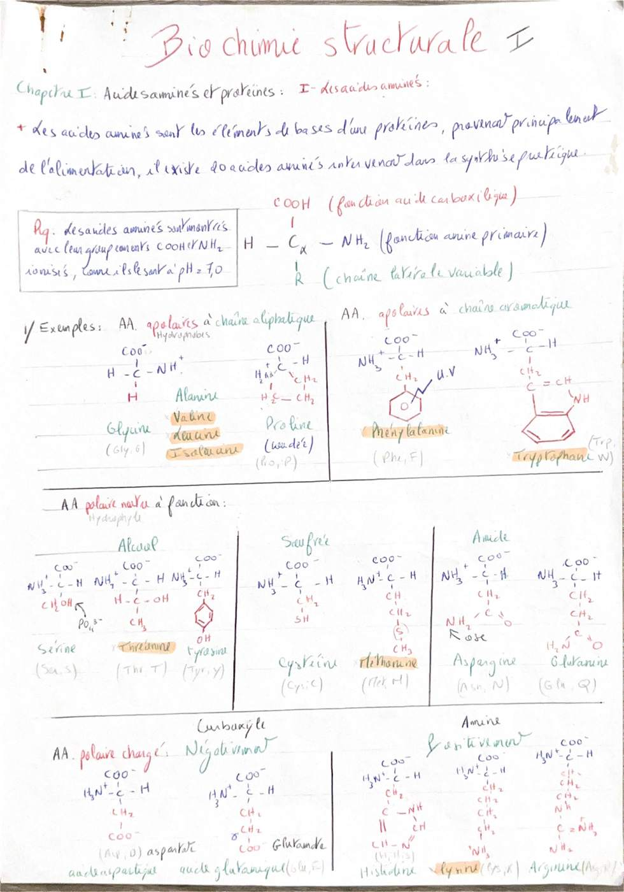
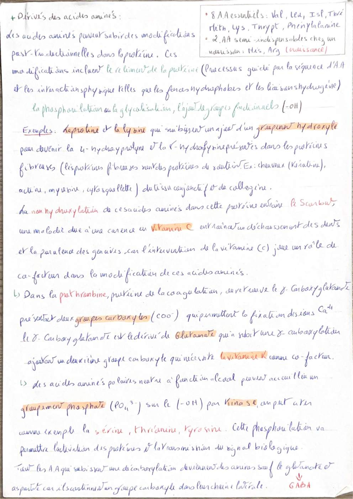
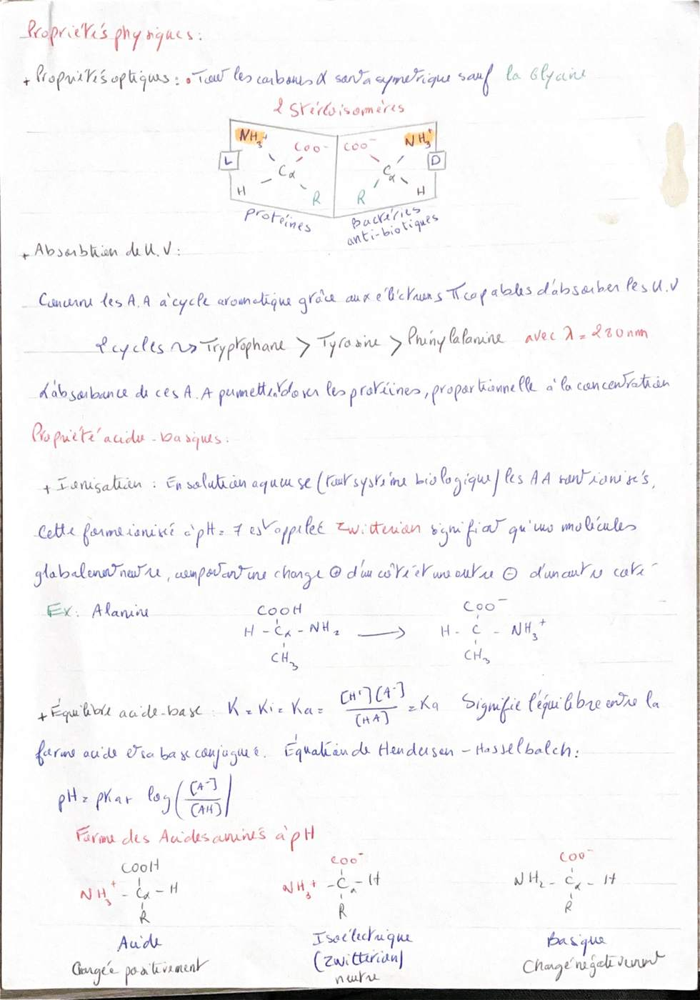
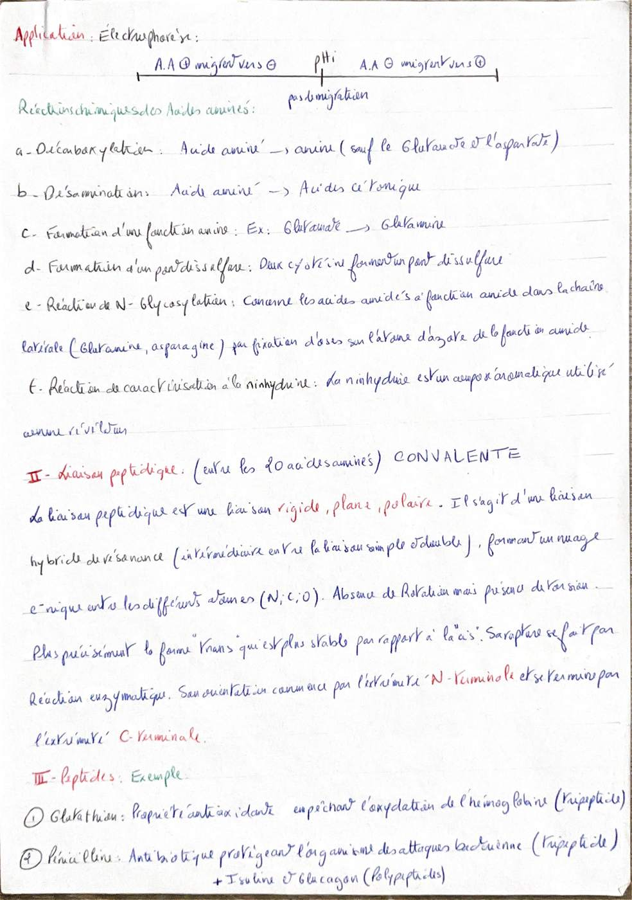
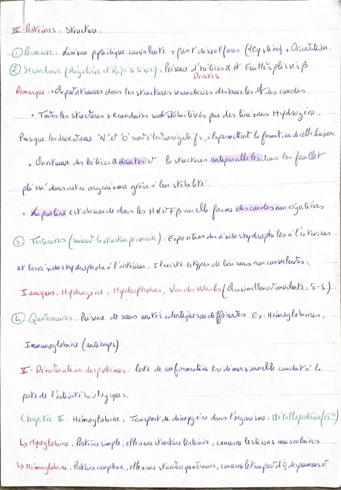
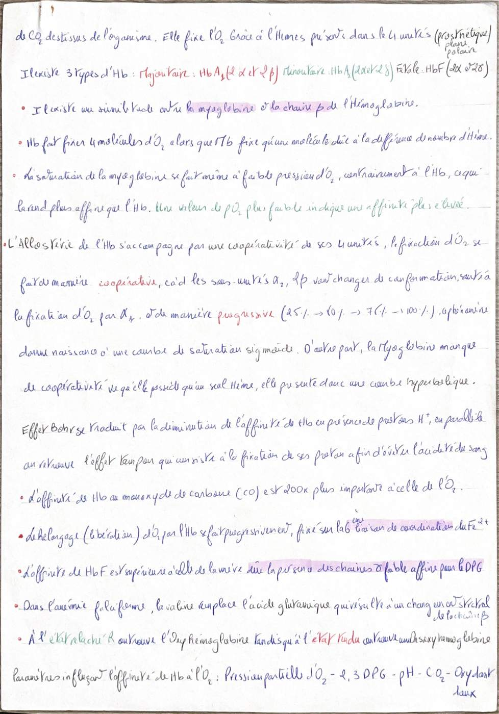

La fiche en 5 idées — si tu ne retiens que ça
- Tous les acides aminés ont la même tête : —COOH et —NH₂ sur le même carbone α. Seul le R change — et c'est le R qui décide de tout : apolaire, polaire, chargé.
- 8 essentiels + 2 semi (His, Arg, chez le nourrisson). Et 4 dérivés à connaître avec leur cofacteur : hydroxyPro/hydroxyLys (vitamine C), γ-carboxyGlu (vitamine K), phosphoSérine (kinases), amines (décarboxylation, sauf Glu et Asp).
- Le pH décide de la charge : acide → cation, au pHi → zwitterion neutre, basique → anion. Trois lignes, et l'électrophorèse est résolue.
- La liaison peptidique est rigide, plane, polaire, hybride de résonance. Au-dessus, quatre structures, avec trois exceptions à ne jamais oublier : Pro absente des hélices α et feuillets β, liaisons hydrogène partout dans le secondaire, et la dénaturation épargne la structure primaire.
- L'hémoglobine : 4 hèmes → 4 O₂ → courbe sigmoïde (myoglobine : 1 hème, hyperbole). Cinq paramètres déplacent la courbe : P O₂, 2,3-DPG, pH, CO₂, oxydants.
Ce que la fiche ne traite pas — et qu'il faut ajouter
| Manque dans la fiche | À savoir en plus | Où c'est traité ici |
|---|---|---|
| Les valeurs de pHi (la fiche parle d'électrophorèse sans chiffres) | Glutamate 3,2 · Leucine 6,0 · Lysine 9,7 — et pHi = moyenne des deux pKa pour un acide aminé neutre | Chapitre 11 |
| Le nom de l'acide aminé qui cède le proton dans l'effet Bohr | L'histidine (son imidazole capte le H⁺) — la fiche dit seulement « protons H⁺ » | Chapitre 12 |
| La structure de l'hème (aucun dessin sur la fiche) | Protoporphyrine IX + Fe²⁺ : 4 azotes + histidine proximale + O₂ en 6ᵉ position | Chapitre 12 |
| Les enzymes (chapitre II du module) | La fiche est le chapitre I ; l'enzymologie est sur un autre support (93 diapos) | Chapitre 13 · cours Khlil |
| Les protéines fibreuses citées en passant | Kératine, actine, myosine, collagène : ce sont les protéines de soutien du tissu conjonctif | Chapitre 12 |
Acides aminés : la structure et la classification

« Biochimie structurale I — Chapitre I : Acides aminés et protéines : I – des acides aminés »
« Les acides aminés sont les éléments de base d'une protéine, provenant principalement de l'alimentation, il existe 20 acides aminés intervenant dans la synthèse protéique. »
« Rq : des acides aminés sont ionisés avec leur groupement COOH / NH₂ ionisés, comme ils sont à pH ≈ 7,0 »
« COOH (fonction acide carboxylique) — Cα — NH₂ (fonction amine primaire) — R (chaîne latérale variable) »
« 1/ Exemples : AA apolaires à chaîne aliphatique (hydropathie) : Glycine (Gly, G), Alanine, Valine, Leucine, Isoleucine, Proline (coudée) — AA apolaires à chaîne aromatique : Phénylalanine (Phe, F), Tryptophane (Trp, W) avec U.V. »
« AA polaires neutres à fonction : Alcool — Sérine (Ser, S), Thréonine (Thr, T), Tyrosine (Tyr, Y) ; Soufrés — Cystéine (Cys, C), Méthionine (Met, M) ; Amide — Asparagine (Asn, N), Glutamine (Gln, Q) »
« AA polaires chargés négativement : Carboxyle — Aspartate (Asp, D) acide aspartique, Glutamate (Glu, E) acide glutamique »
« AA polaires chargés positivement : Amine — Histidine (His, H), Lysine (Lys, K), Arginine (Arg, R) »
Ce que ça veut dire
Une protéine, c'est une chaîne de 20 briques différentes, et chaque brique a la même tête : un —COOH (acide) et un —NH₂ (amine) portés par le même carbone, appelé carbone α. Tout ce qui change d'un acide aminé à l'autre, c'est le R : la chaîne latérale. Toute la biochimie des protéines découle de cette seule phrase.
La fiche classe ensuite les 20 acides aminés par la nature de leur R, en trois familles : apolaires (qui fuient l'eau), polaires neutres (qui aiment l'eau sans être chargées) et polaires chargées (négatives ou positives).
| Famille | Qui ? | Le détail qui fait la question |
|---|---|---|
| Apolaires aliphatiques | Gly, Ala, Val, Leu, Ile, Pro | La proline est notée « coudée » : son cycle rigide casse les hélices |
| Apolaires aromatiques | Phe, Trp | Le tryptophane porte la mention U.V. : les aromatiques absorbent à 280 nm |
| Polaires neutres | Sérine, Thréonine, Tyrosine | Fonction alcool —OH (la Tyr est aromatique et polaire) |
| Cystéine, Méthionine | Fonction soufrée : —SH pour la Cys, —S—CH₃ pour la Met | |
| Asparagine, Glutamine | Fonction amide | |
| Chargés (−) | Aspartate, Glutamate | Un deuxième carboxyle dans le R → charge négative |
| Chargés (+) | Histidine, Lysine, Arginine | Amine (Lys), guanidine (Arg), imidazole (His) |
« Lesquels sont aromatiques ? » → Phe, Trp et Tyr.
« Lesquels sont basiques ? » → Lys, Arg, His (les trois « + » de la fiche).
Les dérivés des acides aminés et les 8 essentiels

« Dérivés des acides aminés : les acides aminés peuvent subir des modifications post-traductionnelles dans la protéine. Ces modifications influent sur le repliement de la protéine (processus guidé par la séquence d'AA et les interactions physiques telles que les forces hydrophobes et les liaisons hydrogène), la phosphorylation ou la glycosylation, l'ajout de groupes fonctionnels (-OH). »
« Exemples : la proline et la lysine qui subissent un ajout d'un groupement hydroxyle pour devenir la 4-hydroxyproline et la 5-hydroxylysine présentes dans les protéines fibreuses (les protéines fibreuses sont des protéines de soutien : ex. cheveux (kératine), actine, myosine, cytosquelette) du tissu conjonctif et du collagène. »
« La non-hydroxylation de ces acides aminés dans cette protéine entraîne le Scorbut, une maladie due à une carence en Vitamine C entraînant un déchaussement des dents et la paralysie des gencives, car l'intervention de la vitamine C joue un rôle de co-facteur dans la modification de ces acides aminés. » (« paralysie des gencives » : le mot du manuscrit ; en clinique on parle de gencives qui saignent — voir la note ci-dessous)
« b) Dans la prothrombine, protéine de la coagulation, on retrouve le γ-carboxyglutamate présentant deux groupes carboxyles (COO⁻) qui permettent la fixation des ions Ca²⁺. Le γ-carboxyglutamate est le dérivé de Glutamate qui a subit une γ-carboxylation ajoutant un deuxième groupe carboxyle qui nécessite la vitamine K comme co-facteur. »
« c) Les acides aminés polaires neutres à fonction alcool peuvent accueillir un groupement phosphate (PO₄³⁻) sur le (-OH) par kinase, on peut citer comme exemple la sérine, thréonine, tyrosine. Cette phosphorylation va permettre l'activation des protéines et la transmission du signal biologique. »
« Tous les AA qui subissent une décarboxylation deviennent des amines sauf le glutamate et aspartate car ils contiennent un groupe carboxyle dans leur chaîne latérale. ↓ GABA »
« 8 AA essentiels : Val, Leu, Ile, Thr, Met, Lys, Trypt, Phénylalanine. 2 AA semi-indispensables chez un nourrisson : His, Arg (croissance). »
Ce que ça veut dire
Une protéine est fabriquée avec les 20 acides aminés standards, puis certains sont retouchés : on ajoute un —OH, un phosphate, un carboxyle… C'est ce qu'on appelle une modification post-traductionnelle. La fiche en garde quatre exemples, et chacun a un cofacteur vitaminique :
| Dérivé | Fabriqué à partir de | Cofacteur | Où / pourquoi |
|---|---|---|---|
| 4-hydroxyproline et 5-hydroxylysine | Proline, Lysine | Vitamine C | Collagène : sans elles, le collagène n'est pas solide → scorbut (dents qui se déchaussent, gencives qui saignent) |
| γ-carboxyglutamate | Glutamate | Vitamine K | Prothrombine : les deux COO⁻ fixent le Ca²⁺, indispensable à la coagulation |
| Phosphosérine / phosphothréonine / phosphotyrosine | Ser, Thr, Tyr | Kinases (ATP) | Ajout d'un PO₄³⁻ sur le —OH : activation des protéines et transmission du signal |
| Amines (GABA…) | Décarboxylation des AA | PLP (vitamine B6) | Tous les AA donnent une amine sauf Glu et Asp |
Propriétés physiques : optique, UV, ionisation

« Propriétés physiques : + Propriétés optiques : tous les carbones α sont asymétriques sauf la glycine → stéréoisomères (L : protéines / D : bactéries antibio-tiques) »
« + Absorption de l'U.V : concerne les AA à cycle aromatique grâce aux électrons π capables d'absorber les U.V. Cycles → Tryptophane > Tyrosine > Phénylalanine avec λ = 280 nm. L'absorbance de ces AA permet de doser les protéines, proportionnelle à la concentration. »
« Propriétés acido-basiques : + Ionisation : en solution aqueuse (tous systèmes biologiques) les AA sont ionisés. Cette forme ionisée à pH = 7 est appelée zwitterion, signifie qu'une molécule globalement neutre, comportant une charge ⊕ d'un côté et une charge ⊖ de l'autre côté. Ex : Alanine COOH—CαH(NH₂)—CH₃ → COO⁻—CαH(NH₃⁺)—CH₃ »
« + Équilibre acide-base : Ka = Ke/Kb = Ka = [H⁺][A⁻]/[HA] = Kd. Signifie l'équilibre entre la forme acide et sa base conjuguée. Équation de Henderson-Hasselbalch : pH = pKa + log([A⁻]/[HA]) »
« Formes des acides aminés à pH : Acide (chargé positivement) — Isoélectrique (zwitterion, neutre) — Basique (chargé négativement) »
Ce que ça veut dire
1. L'optique. Un carbone qui porte quatre groupes différents est asymétrique : il existe alors deux formes en miroir, dites L et D. Comme le carbone α porte toujours —H, —NH₂, —COOH et —R, il est asymétrique… sauf dans la glycine, où R = H (deux H identiques). Les protéines humaines sont toutes de la série L ; les D-acides aminés se rencontrent chez les bactéries (et dans la paroi bactérienne — d'où le lien avec les antibiotiques écrit sur la fiche).
2. L'UV. Seuls les cycles aromatiques absorbent à 280 nm, grâce à leurs électrons π. Ordre d'absorption : Trp > Tyr > Phe. On s'en sert pour doser une protéine : l'absorbance est proportionnelle à la concentration (loi de Beer-Lambert).
3. L'ionisation. À pH 7, l'acide aminé est un zwitterion : globalement neutre, mais avec un + d'un côté (—NH₃⁺) et un − de l'autre (—COO⁻). La fiche montre exactement la transformation : —COOH devient —COO⁻, et —NH₂ devient —NH₃⁺.
4. Les trois formes. C'est le tableau à garder en tête pour l'électrophorèse (page 4) :
| pH | Forme | Charge nette | Sur la fiche |
|---|---|---|---|
| pH < pHi (milieu acide) | —COOH + —NH₃⁺ | + (cation) | « Acide, chargé positivement » |
| pH = pHi | —COO⁻ + —NH₃⁺ | 0 (zwitterion) | « Isoélectrique, neutre » |
| pH > pHi (milieu basique) | —COO⁻ + —NH₂ | − (anion) | « Basique, chargé négativement » |
2. « Acide » sur la fiche ne veut pas dire « pH acide » : c'est la forme de la molécule (—COOH présent) ; et « basique » désigne la forme anionique. C'est la source d'erreur n° 1 des QCM.
Électrophorèse, réactions chimiques et liaison peptidique

« Application : Électrophorèse : A.A ⊖ migrent vers ⊕ — pHi — A.A ⊕ migrent vers ⊖ ; pas de migration »
« Réactions chimiques des acides aminés : a – Décarboxylation : Acide aminé → amine (sauf le Glutamate et l'aspartate). b – Désamination : Acide aminé → Acides cétoniques. c – Formation d'une fonction amine : Ex : Glutamate → Glutamine. d – Formation d'un pont disulfure : Deux cystéines forment un pont disulfure. e – Réaction de N-glycosylation : concerne les acides aminés à fonction amide dans la chaîne latérale (Glutamine, asparagine) par fixation d'oses sur l'atome d'azote de la fonction amide. f – Réaction de caractérisation à la ninhydrine : la ninhydrine est un composé aromatique utilisé comme révélateur. »
« II – Liaison peptidique (entre les 20 acides aminés) COVALENTE : la liaison peptidique est une liaison rigide, plane, polaire. Il s'agit d'une liaison hybride de résonance (intermédiaire entre la liaison simple et double), formant un nuage électronique entre les différents atomes (N, C, O). Absence de rotation mais présence de résonance. Plus précisément la forme "trans" qui est plus stable par rapport à la "cis". Sa synthèse se fait par réaction enzymatique. Son orientation commence par l'acide aminé N-terminal et se termine par l'acide aminé C-terminal. »
« III – Peptides : exemples — ① Glutathion : propriété antioxydante empêchant l'oxydation de l'hémoglobine (tripeptide). ② Pénicilline : antibiotique protégeant l'organisme des attaques bactériennes (tripeptide) + Insuline et glucagon (polypeptides) »
Ce que ça veut dire
1. L'électrophorèse, en une ligne. Le pHi est la frontière : au pHi l'acide aminé ne bouge pas ; en dessous (pH < pHi) il est + et part vers la cathode ⊖ ; au-dessus il est − et part vers l'anode ⊕. La fiche l'écrit dans l'autre sens (elle désigne la charge), mais le résultat est le même : le signe de (pH − pHi) décide du sens de migration.
2. Les six réactions. Elles tombent presque chaque année, sous forme de « quel est le produit ? » :
| Réaction | Ce qui se passe | À retenir |
|---|---|---|
| Décarboxylation | Perte de CO₂ → amine | Sauf Glu et Asp (il leur reste un COOH dans le R) |
| Désamination | Perte de NH₂ | Donne un acide cétonique |
| Amidation | —COOH → —CONH₂ | Glu → Gln (et Asp → Asn) |
| Pont disulfure | 2 Cys → —S—S— | Covalent, réversible, stabilise la structure |
| N-glycosylation | Ose fixé sur l'azote de l'amide | Sur Gln et Asn uniquement |
| Ninhydrine | Révélation | Composé aromatique, révélateur des acides aminés |
3. La liaison peptidique. Quatre adjectifs, à réciter dans cet ordre : rigide (pas de rotation), plane, polaire, hybride de résonance (entre la liaison simple et la double, avec un nuage électronique N–C–O). Elle est covalente, sa synthèse est enzymatique, et la forme trans est plus stable que la cis. La chaîne se lit toujours de l'N-terminal vers le C-terminal.
Les quatre structures des protéines et la dénaturation

« IV – Protéines : structure. ① Primaire : liaison peptidique covalente + ponts disulfures (cystéines) + orientation. ② Secondaire (régulière et répétitive) : présence d'hélices α et feuillets plissés β (droites). Remarque : on peut trouver dans les structures secondaires des boucles et des coudes. Toutes les structures secondaires sont stabilisées par des liaisons hydrogène, puisque les deux atomes "N" et "O" sont électronégatifs, ils permettent la formation de cette liaison. On ne trouve des hélices α droites et les structures antiparallèles dans les feuillets plissés dans notre organisme grâce à leur stabilité. La proline est absente dans les hélices α et les feuillets β car elle forme des coudes non réguliers. »
« ③ Tertiaire (souvent la structure primaire) : exposition des résidus hydrophiles à l'extérieur et les résidus hydrophobes à l'intérieur. Il existe 4 types de liaisons non covalentes : ioniques, hydrogène, hydrophobes, van der Waals (des demi-liaisons covalentes : S–S). »
« ④ Quaternaire : présence de sous-unités identiques ou différentes. Ex : hémoglobines, immunoglobuline (anticorps). »
« V- Dénaturation des protéines : perte de sa conformation tridimensionnelle conduisant à la perte de l'activité biologique. »
« Chapitre II : Hémoglobine : transport de dioxygène dans l'organisme : Hétéroprotéine (Fe²⁺). Myoglobine : protéine simple, elle a une structure tertiaire, contenue les tissus musculaires. Hémoglobine : protéine complexe, elle a une structure quaternaire, contenue le transport d'O₂ des poumons et… »
Ce que ça veut dire
Une protéine se décrit sur quatre niveaux, du fil à la machine :
| Niveau | Définition simple | Ce qui la tient |
|---|---|---|
| 1. Primaire | L'ordre des acides aminés, comme les lettres d'un mot | Liaison peptidique covalente + ponts disulfure |
| 2. Secondaire | Des motifs réguliers et répétitifs : hélice α et feuillet β | Liaisons hydrogène (N et O électronégatifs) |
| 3. Tertiaire | Le repliement 3D : hydrophiles dehors, hydrophobes dedans | Ioniques, H, hydrophobes, van der Waals + S–S |
| 4. Quaternaire | Plusieurs sous-unités assemblées (Hb, anticorps) | Liaisons faibles (+ S–S parfois) |
2. Dans l'organisme on trouve les hélices α droites et les feuillets antiparallèles, parce qu'ils sont plus stables.
3. La proline est absente des hélices α et des feuillets β : son cycle rigide crée des coudes non réguliers.
L'hémoglobine : 4 hèmes, une courbe sigmoïde

« …de CO₂ destinés et de l'organisme. Elle fixe l'O₂ grâce à l'hème présent dans la sous-unité (protéine globulaire / polaire). Il existe 3 types d'Hb : Majoritaire HbA1 (2α et 2β), Minoritaire HbA2 (2α et 2δ), Fœtale HbF (2α et 2γ). »
« Il existe une similitude entre la myoglobine et la chaîne β de l'hémoglobine. Hb fait fixer 4 molécules d'O₂ alors que la Mb fixe qu'une molécule d'O₂ à la différence du nombre d'hème. »
« La saturation de la myoglobine se fait même à faible pression d'O₂, contrairement à l'Hb […] Une valeur de pO₂ plus faible indique une affinité plus élevée. » (la fin de cette phrase est peu lisible sur le scan — voir « ce que j'ai vérifié » plus bas)
« L'Allostérie de l'Hb s'accompagne par une coopérativité de ses 4 unités ; la fixation d'O₂ se fait d'une manière coopérative, c.-à-d. les sous-unités α₁β₁ changent de conformation, surtout à la fixation d'O₂ par α₁, et de manière progressive (25 % → 61 % → 74 % → 100 %), optiquement donnant naissance à une courbe de saturation sigmoïde. D'autre part, la myoglobine manque de coopérativité vu qu'elle ne possède qu'un seul hème : elle présente donc une courbe hyperbolique. »
« Effet Bohr : se traduit par la diminution de l'affinité de Hb en présence de protons H⁺, en parallèle on retrouve l'effet tampon qui consiste à la fixation de ses protéines afin d'éviter l'acidité du sang. »
« L'affinité de Hb au monoxyde de carbone (CO) est 200× plus importante à celle de l'O₂. »
« Le relargage (libération) d'O₂ par l'Hb se fait progressivement ; l'O₂ est fixé sur la 6ᵉ liaison de coordination du Fe²⁺. »
« L'affinité de HbF est supérieure à celle de la mère : la présence des chaînes γ a une faible affinité pour le 2,3-DPG. »
« Dans l'anémie falciforme, la valine remplace l'acide glutamique qui résulte d'un changement structural de la molécule. »
« À l'état relâché R on trouve l'oxyhémoglobine, tandis qu'à l'état T tendu on trouve la désoxyhémoglobine. »
« Paramètres influençant l'affinité de Hb à l'O₂ : Pression partielle d'O₂ – 2,3 DPG – pH – CO₂ – Oxydants »
Ce que ça veut dire
L'hémoglobine est un tétramère : quatre sous-unités, donc quatre hèmes, donc quatre O₂. La myoglobine, elle, n'a qu'un seul hème : un seul O₂. C'est toute la différence entre les deux courbes.
| Myoglobine | Hémoglobine | |
|---|---|---|
| Hèmes | 1 | 4 |
| O₂ fixés | 1 | 4 |
| Structure | Tertiaire (protéine simple) | Quaternaire (hétéroprotéine, Fe²⁺) |
| Courbe | Hyperbolique | Sigmoïde (25 → 61 → 74 → 100 %) |
| Coopérativité | Absente | Présente (allostérie) |
| Où | Tissus musculaires | Sang (poumons → tissus) |
| Type d'Hb | Chaînes | Quand |
|---|---|---|
| HbA1 | 2α + 2β | Majoritaire (adulte) |
| HbA2 | 2α + 2δ | Minoritaire |
| HbF | 2α + 2γ | Fœtale — plus d'affinité que l'Hb maternelle, car les chaînes γ fixent moins bien le 2,3-DPG |
2. « 6ᵉ liaison de coordination du Fe²⁺ » : le chiffre est exact. Le fer de l'hème est hexacoordiné — 4 azotes du noyau porphyrinique, la 5ᵉ liaison avec l'histidine proximale de la globine, la 6ᵉ disponible pour l'O₂. C'est ce qui explique que l'O₂ puisse se fixer et se relâcher.
3. « Les sous-unités α₁β₁ changent de conformation » : les 4 unités de l'Hb sont 2α + 2β ; la fiche écrit « α₁, β₂ » pour désigner le couple α₁–β₂ de chaque dimère. Les deux notations se rencontrent ; retiens simplement qu'une sous-unité qui fixe l'O₂ entraîne les trois autres.
4. La fin de la phrase sur la myoglobine est peu lisible sur le scan. Ce qu'il faut retenir, et qui est sûr : la myoglobine a une affinité plus élevée que l'hémoglobine — à pression d'O₂ égale, elle est plus saturée. Une pO₂ faible suffit à la saturer, alors qu'il faut une pO₂ élevée pour saturer l'Hb.
Réviser cette fiche en 20 minutes
- 3 min — la carte. Récite les trois familles d'acides aminés et donne un exemple de chaque. Si tu bloques, reviens à la page 1.
- 3 min — les exceptions. Glycine sans carbone asymétrique · Pro absente des hélices · Glu et Asp non décarboxylables · dénaturation qui épargne la structure primaire.
- 4 min — les cofacteurs. Vitamine C → hydroxyproline (scorbut) · Vitamine K → γ-carboxyglutamate (Ca²⁺) · kinases → phosphosérine.
- 4 min — les courbes. Redessine l'hyperbole (Mb) et la sigmoïde (Hb), place les 25 / 61 / 74 / 100 %.
- 3 min — les 5 paramètres. P O₂, 2,3-DPG, pH, CO₂, oxydants. Dis pour chacun s'il augmente ou diminue l'affinité.
- 3 min — l'auto-test. Passe à l'examen blanc et aux QCM des chapitres 11 et 12.